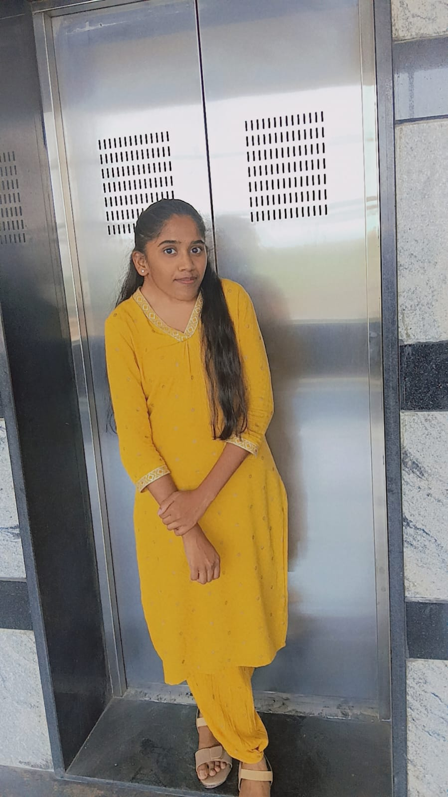

Hi, I'm Hema!,/b> I'm a 20-year-old student currently pursuing my studies in Computer Science and Engineering. I have a strong passion for technology and enjoy exploring the latest advancements in the field. In my free time, I love to read books, watch movies, and spend quality time with my friends and family. I am always eager to learn new things and take on challenges that help me grow both personally and professionally. My goal is to make a positive impact in the world through my work in technology and contribute to creating innovative solutions that can benefit society.
I am a curious and enthusiastic individual who loves to explore new ideas and concepts.
I have a wide range of interests, including technology, science, art, and culture. I enjoy learning about different cultures and traditions, and I find it fascinating to see how people from around the world live their lives. I am also passionate about technology and enjoy keeping up with the latest trends and innovations in the field. In my free time, I like to read books, watch movies, and spend time with my friends and family. Overall, I am a well-rounded person who values knowledge, creativity, and meaningful connections with others.
I'm a passionate and dedicated individual with a love for learning and exploring new things. I enjoy spending time with my family and friends, and I have a wide range of interests that keep me engaged and motivated.
One of my favorite hobbies is traveling. I love discovering new places, experiencing different cultures, and trying new foods. Traveling allows me to broaden my horizons and gain a deeper understanding of the world around me.
In addition to traveling, I also enjoy reading. I find that books are a great way to escape reality and immerse myself in different stories and perspectives. Whether it's fiction, non-fiction, or self-help, I always find something valuable in the pages of a good book.
Overall, I am a curious and adventurous person who values meaningful connections and experiences. I am always eager to learn and grow, and I look forward to the many exciting opportunities that life has in store for me.
My name is Hemasree, and I am currently pursuing a Bachelor of Technology (B.Tech) in Computer Science and Engineering (CSE). I am passionate about technology and enjoy learning about computers, programming, and new innovations in the field of software development. As a CSE student, I am developing my technical skills in programming languages, data structures, databases, and other core computer science subjects.
I am eager to gain practical knowledge through projects, internships, and continuous learning.
My goal is to build a successful career in the technology industry and contribute to creating innovative solutions that can make a positive impact on society.
I am hardworking, determined, and always willing to learn new things to improve my knowledge and skills.